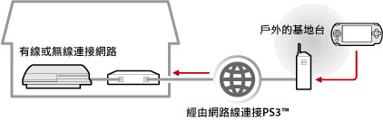
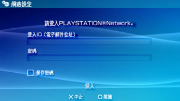

網路 > 如何遙控遊玩（經由網際網路）
如何遙控遊玩（經由網際網路）
若要使用此機能，可能需先更新PSP™和PS3™的系統軟件。
運用PSP™的無線LAN機能，可經由網路，從俗稱為熱點等公共無線區域網路的基地台，跟自己家中的PS3™連線。將PS3™調整為預備連線狀態後，即能從遠離家中的場所或海外進行遙控遊玩。

提示
公共無線區域網路的使用方法與費用會因該服務之提供者而異。詳細請詢問該服務的提供者。
事前準備（1）（PS3™與PSP™）
首度使用遙控遊玩時，需先將PSP™登錄（配置）至PS3™。請選擇 （設定）＞
（設定）＞ （遙控遊玩設定）＞［登錄裝置］進行設定。
（遙控遊玩設定）＞［登錄裝置］進行設定。
事前準備（2）（PS3™）
調整讓PS3™進入預備狀態時的相關設定。若要經由PSP™啟動PS3™的電源（Wake On LAN），需先啟用PS3™的［遙控啟動］。
1. |
使用PS3™進行以下設定。
|
|---|---|
2. |
關閉PS3™的電源。 |
 （使用者），啟用自動登入。
（使用者），啟用自動登入。 （關閉主機電源），即可關閉電源，進入待機狀態。請確認主機的電源指示燈亮著紅燈。
（關閉主機電源），即可關閉電源，進入待機狀態。請確認主機的電源指示燈亮著紅燈。提示
步驟1各種設定的相關詳細設定，請參閱（設定）＞（遙控遊玩設定）＞［遙控啟動］。
事前準備（3）（PSP™）
新建PSP™能與無線基地台連線的網路連線。若要經由網際網路使用遙控遊玩，可利用俗稱為熱點等公共無線區域網路的基地台。詳細請參閱PSP™的用戶指南。
開始遙控遊玩
1. |
操作PSP™，選擇 |
|---|---|
2. |
選擇［透過網際網路連線］。 |
3. |
從連線清單中選擇遙控遊玩時要使用的無線基地台。 |
4. |
輸入PS3™使用的PlayStation®Network登入ID和密碼。  連線成功後，PSP™的螢幕中會顯示PS3™的畫面。 |
 （網路）的
（網路）的 （遙控遊玩）。
（遙控遊玩）。結束遙控遊玩
按下PSP™的PS按鈕（HOME（歸返）按鈕），選擇［結束遙控遊玩］＞［結束並關閉PS3™的電源］。
提示
當進行檔案的複製、底層下載等，需透過PS3™操作而不想關閉PS3™的電源時，請選擇［結束但不關閉PS3™的電源］。
經由網際網路進行遙控遊玩時
經由網際網路進行遙控遊玩時，可能會因您使用之網路裝置而出現不成功的現象。此時，請參考以下資訊。
- 請選擇（設定）＞
 （網路設定）＞［網路連線測試］，確認是否能與網際網路和PlayStation®Network連線。
（網路設定）＞［網路連線測試］，確認是否能與網際網路和PlayStation®Network連線。 - 您使用的路由器支援UPnP時，請啟用路由器的UPnP機能，設定為有效。
- 若您使用不支援UPnP的路由器，可能需要設定路由器的Port forwarding，並允許經由網際網路與PS3™通訊。遙控遊玩時使用的Port（埠）號為TCP : 9293。設定方法的詳細說明，請參閱路由器隨附的使用說明書。
- Port forwarding是讓經由特定埠（入口）的訊號通往其他指定埠（出口）的機能。亦被稱為［Port mapping］或［Address conversion］。
- 經由2台以上的路由器與網際網路連線時，PS3™可能無法正確通訊。
提示
- 路由器（Router）乃是能讓數種裝置同時共有一條網路線的裝置。
- 通訊可能因路由器或網路服務商提供的安全性（加密）機能而受到限制。請同時參閱您使用之網路裝置隨附的使用說明書和網路服務商提供之資料。